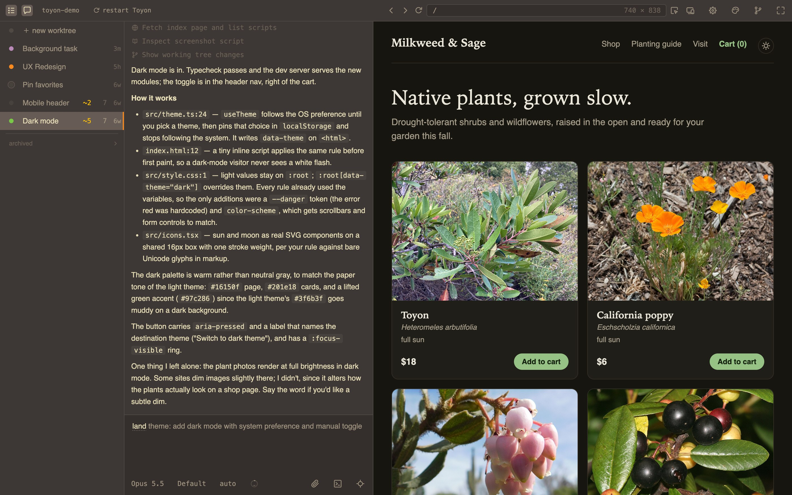
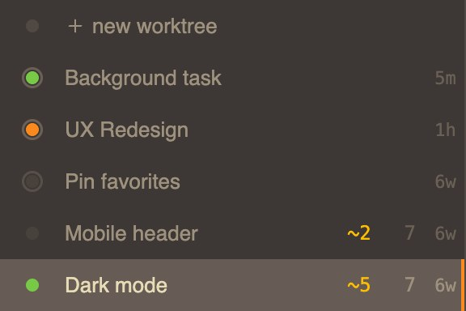
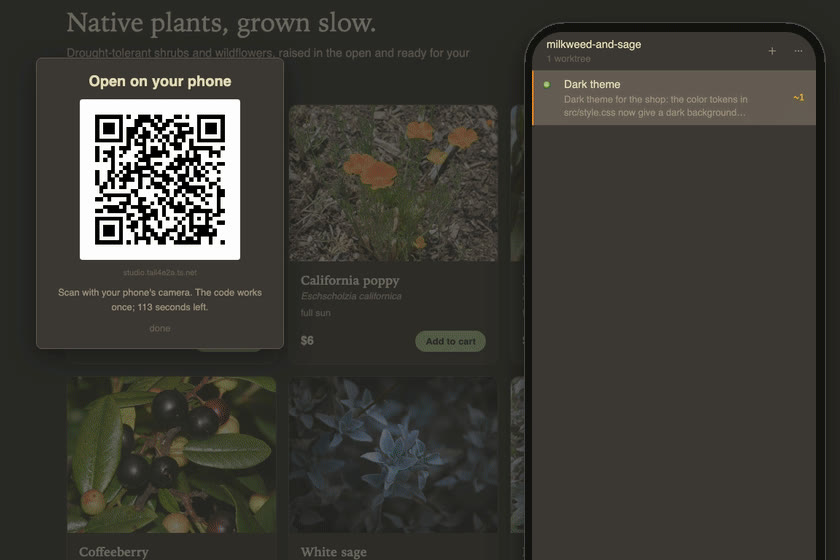

Ask for changes to your web app & try them as they happen.
npx toyon
On your machine
cd your-project
npx toyonmacOS and Linux. Needs Node 18 or newer and an account for the agent you pick; the README has the rest.
On your own server
Keep it running when your laptop is closed: deploy it to your own Fly account, or run it on a box of your own behind Tailscale and open it from your phone. Your code and keys never pass through a Toyon server.
How it works
-
Ask, and watch it change
Say what you want, or point at the thing on the page. The app updates while the agent works; steer it mid-way, or fix the small thing yourself.
-

Know where every chat stands
Every chat gets its own copy of your project with the app running. The list says which ones are working, which are waiting on you, and what each one changed.
-

From your phone
Pair your phone from the top bar. Start a chat from it, steer one that is running, or check the copy on a real phone screen.